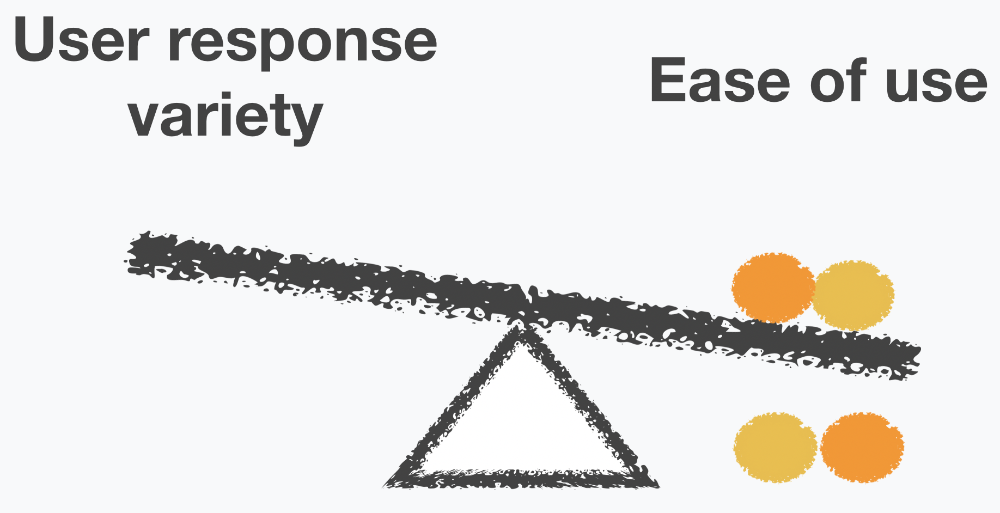

2
Solutins
We ask the turkers to imagine that they want to watch some kinds of movies and an
intelligent assistant can recommend.
What they need to do is to describe the movies to the assistant based on the information shown on the screen.
1. How we show movie infomation?
First, using posters.
Turkers need to guess what kind of movies the posters represent.
Analysis: posters give turkers more space to imagine and express, but are more difficult to understand.
"Movies starred by Leonardo DiCaprio."
Second, using keywords.
Turkers tell what kinds of movies they are looking for according to the keywords.
Analysis: it is super easy to know what to say, but their expressions may be influnced by the words we provide.
"Romantic comedies."
"Movies for Friday night."
Third, using sentences.
Turkers think of other three queires to express the same meaning with the original query.
Analysis: it is easy to come up with answers, too. But the response variety can be influenced much.
Which way has the best balance compared to others?
After pilot tests, we found that using keyword led to the best results.
2. How to teach turkers to use this application?

First, preparation.
Before they use this app:
√ Overall introduction
√ Emphasize the key information including "movie recommendations" and "intelligent assistant"
Second, instructions.
Tell them exactly what they should do.
Turkers can click help button to read this instruction.
Third, tutorials.
Split the instructions to one-by-one-step tutorials, to make sure that they go through all the steps and get necessary information before starting.
Fourth, examples.
Since poster version is hard to learn, we added some examples to the tutorials of this version.
To decrease the influence brought by our instructions, we didn't add examples directly, instead, we applied analogy with clothes and movies.

The tutorials and instructions certainly increase the ease of use.
Some words have little or no influence to user response variety. However, some others may not.
We need to describe the scenarios and show them some examples, such as "Siri", "Comedy" and "Funny movies".
To some degree, these influences are inevitable. They are necessary compromise.
3. Detailed adjustments

After we selected the way to show movie information and tutorials, the balance has got its blue and orange weights.
However, besides movie information and tutorials, many details may also bring subtle infulences.
The detailed adjustments that happened through out the whole process of pilot tests and disucssions are like adjusting weights of a balance. Sometimes the left side is heavier but sometimes it is the opposite.
We need to observe and consider carefully to gradually find a better balance.
Below are some examples of detailed adjustments, and we used purple weights to represent them. The left side represents variety and the right side represnets ease of use.
By replacing the instruction "you want movies like these" with a check, although it became a little harder to understand, we avoid the influence brought by the word "want".
Otherwise, turkers tend to use "I want something" for more times than other sentence patterns, such as "recommend something for me" or "I am looking for something".
By replacing "what would you say?" with the dialogue, we make it easier for turkers to imagine the scenarios that they are talking with an intelligent assistant.
However, the phrase "would like" was repeated more times in the responses, so we chose several similar phrases and randomly offer one to each turker to reduce this influence, such as "what are you looking for?".
Although the "≈" is very useful to avoid turkers repeating the provided word "like", it was really hard to understand its meaning.
As a result, we chose several alternative words, such as "similar to".

We repeated the information "speak naturally" for many times, to try to help turkers realize and pay attention to it subjectively.
To avoid directly giving turkers examples, we had to use more sentences to make it clear.
But it is necessary, otherwise, turkers would repeat the example, "show me something", in most scenarios.
After these iterations, we are increasingly closer to the best balance.
After more attempts, agian and again, we finaly got a better balance point.